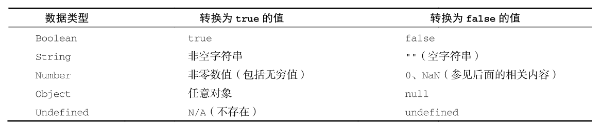
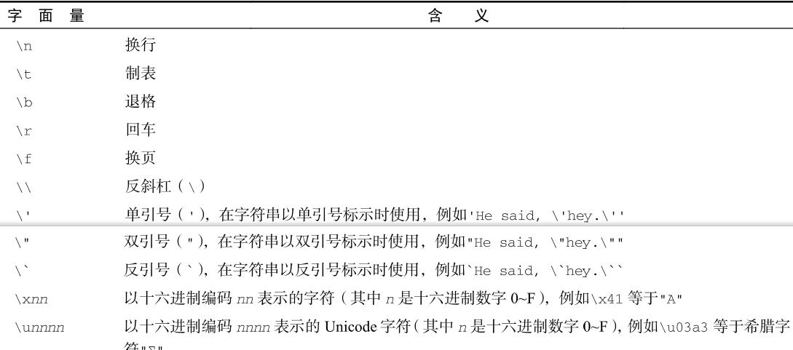

JavaScript—数据类型
typeof操作符是用来确定任意变量的数据类型的。
注意：typeof在某些情况下返回的结果可能会让人费解，但技术上讲还是正确的。比如，调用typeof null 返回的是”object”。这是因为特殊值 null 被认为是一个对空对象的引用。
注意：严格来讲，函数在 ECMAScript 中被认为是对象，并不代表一种数据类型。可是，函数也有自己特殊的属性。为此，就有必要通过 typeof 操作符来区分函数和其他对象。
1.Undefined 类型
Undefined 类型只有一个值，就是特殊值 undefined。当使用 var 或 let 声明了变量但没有初始化时，就相当于给变量赋予了 undefined 值。
undefined 值的变量跟未定义变量是有区别的，例如：
1 | let massage |
对于未初始化变量调用typeof时，返回结果时“undefined”，但对于未声明的变量调用它时，返回结果好事“undefined”。
1 | let message; // 这个变量被声明了，只是值为 undefined |
无论是声明还是未声明，typeof 返回的都是字符串”undefined”。逻辑上讲这是对的，因为虽然严格来讲这两个变量存在根本性差异，但它们都无法执行实际操作。
undefined 是一个假值。因此，如果需要，可以用更简洁的方式检测它。不过要记住，也有很多其他可能的值同样是假值。所以一定要明确自己想检测的就是 undefined 这个字面值，而不仅仅是假值 。
1 | let message; // 这个变量被声明了，只是值为 undefined |
2.Null类型
Null同样只有一个值，即特殊值null，逻辑上讲，null值表示一个空对象指针，这也是给typeof 传一个 null 会返回”object”的原因
1 | let car = null; |
在定义将来要保存对象值的变量时，建议使用 null 来初始化，不要使用其他值。这样，只要检查这个变量的值是不是 null 就可以知道这个变量是否在后来被重新赋予了一个对象的引用，比如：
1 | if (car != null) { |
undefined由null值派生而来，但用途完全不一样。永远不必显式地将
变量值设置为 undefined。但 null 不是这样的。任何时候，只要变量要保存对象，而当时又没有那个对象可保存，就要用 null 来填充该变量。这样就可以保持 null 是空对象指针的语义，并进一步将其与 undefined 区分开来。
null 是一个假值。因此，如果需要，可以用更简洁的方式检测它。不过要记住，也有很多其他可能的值同样是假值。所以一定要明确自己想检测的就是 null 这个字面值，而不仅仅是假值。
1 | let message = null; |
3.Boolean 类型
Boolean（布尔值）类型是使用最频繁的类型之一，有两个字面值：true 和 false。这两个布尔值不同于数值，因此 true 不等于 1，false 不等于 0。下面是给变量赋布尔值的例子，并且true和false是区分大小写的。
要将一个其他类型的值转换为布尔值，可以调用特定的 Boolean()转型函数。下表是不同类型与布尔值之间的转换原则。
4.Number 类型
Number 类型使用 IEEE 754 格式表示整数和浮点值（在某些语言中也叫双精度值）。不同的数值类型相应地也有不同的数值字面量格式。
浮点值：
要定义浮点值，数值中必须包含小数点，而且小数点后面必须至少有一个数字。虽然小数点前面不是必须有整数，但推荐加上。
在小数点后面没有数字的情况下，数值就会变成整数。类似地，如果数值本身就是整数，只是小数点后面跟着 0（如 1.0），那它也会被转换为整数。
对于非常大或非常小的数值，浮点值可以用科学记数法来表示。
值的范围：
最小值：可以表示的最小数值保存在 Number.MIN_VALUE 中，这个值在多数浏览器中是 5e-324；
最大值：可以表示的最大数值保存在
Number.MAX_VALUE 中，这个值在多数浏览器中是 1.797 693 134 862 315 7e+308。超出js可表示的范围，那个数值会被自动转换为一个特殊的Infinity（无穷）值。任何无法表示的负数以-Infinity（负无穷大）表示，任何无法表示的正数以 Infinity（正无穷大）表示。
NaN
一个特殊的数值叫 NaN，意思是“不是数值”（Not a Number），用于表示本来要返回数值的操作失败了（而不是抛出错误）。比如，用 0 除任意数值在其他语言中通常都会导致错误，从而中止代码执行。但在 ECMAScript 中，0、+0 或0 相除会返回 NaN。
首先，任何涉及 NaN 的操作始终返回 NaN（如 NaN/10），在连续多步计算时这可能是个问题。其次，NaN 不等于包括 NaN 在内的任何值。
数值转换：
有 3 个函数可以将非数值转换为数值：Number()、parseInt()和 parseFloat()。Number()是转型函数，可用于任何数据类型。后两个函数主要用于将字符串转换为数值。
5.string类型
String（字符串）数据类型表示零或多个 16 位 Unicode 字符序列。字符串可以使用双引号（”）、单引号（’）或反引号（`）标示。
1 | let firstName = "John"; |
字符字面量
字符串数据类型包含一些字符字面量，用于表示非打印字符或有其他用途的字符。

字符串的特点
字符串是不可变的（immutable），意思是一旦创建，它们的值就不能变了。要修改某个变量中的字符串值，必须先销毁原始的字符串，然后将包含新值的另一个字符串保存到该变量。
转换为字符串
有两种方式把一个值转换为字符串。首先是使用几乎所有值都有的 toString()方法。这个方法唯一的用途就是返回当前值的字符串等价物。null 和 undefined 值没有 toString()方法。
1
2
3
4let age = 11;
let ageAsString = age.toString(); // 字符串"11"
let found = true;
let foundAsString = found.toString(); // 字符串"true"模板字面量
使用模板字面量定义字符串的能力。与使用单引号或双引号不同，模板字面量保留换行字符，可以跨行定义字符串。
1
2
3
4
5
6
7
8
9
10let myMultiLineString = 'first line\nsecond line';
let myMultiLineTemplateLiteral = `first line
second line`;
console.log(myMultiLineString);
// first line
// second line"
console.log(myMultiLineTemplateLiteral);
// first line
// second line
console.log(myMultiLineString === myMultiLinetemplateLiteral); // true字符串插值
模板字面量最常用的一个特性是支持字符串插值，也就是可以在一个连续定义中插入一个或多个值。技术上讲，模板字面量不是字符串，而是一种特殊的 JavaScript 句法表达式，只不过求值后得到的
是字符串。模板字面量在定义时立即求值并转换为字符串实例，任何插入的变量也会从它们最接近的作用域中取值。字符串插值通过在${}中使用一个 JavaScript 表达式实现：
1
2
3
4
5
6
7
8
9
10let value = 5;
let exponent = 'second';
// 以前，字符串插值是这样实现的：
let interpolatedString =
value + ' to the ' + exponent + ' power is ' + (value * value);
// 现在，可以用模板字面量这样实现：
let interpolatedTemplateLiteral =
`${ value } to the ${ exponent } power is ${ value * value }`;
console.log(interpolatedString); // 5 to the second power is 25
console.log(interpolatedTemplateLiteral); // 5 to the second power is 25
6.Symbol类型
符号是原始值，且符号实例是唯一、不可变的。符号的用途是确保对象属性使用唯一标识符，不会发生属性冲突的危险。
尽管听起来跟私有属性有点类似，但符号并不是为了提供私有属性的行为才增加的（尤其是因为Object API 提供了方法，可以更方便地发现符号属性）。相反，符号就是用来创建唯一记号，进而用作非字符串形式的对象属性。
符号的基本用法
符号需要使用 Symbol()函数初始化。因为符号本身是原始类型，所以 typeof 操作符对符号返回symbol。
调用 Symbol()函数时，也可以传入一个字符串参数作为对符号的描述（description），将来可以通
过这个字符串来调试代码。但是，这个字符串参数与符号定义或标识完全无关。符号没有字面量语法，这也是它们发挥作用的关键。按照规范，你只要创建 Symbol()实例并将其用作对象的新属性，就可以保证它不会覆盖已有的对象属性，无论是符号属性还是字符串属性。
最重要的是，Symbol()函数不能与 new 关键字一起作为构造函数使用。这样做是为了避免创建符号包装对象，像使用 Boolean、String 或 Number 那样，它们都支持构造函数且可用于初始化包含原始值的包装对象。
使用全局符号注册表
如果运行时的不同部分需要共享和重用符号实例，那么可以用一个字符串作为键，在全局符号注册表中创建并重用符号。为此，需要使用 Symbol.for()方法。
使用符号作为属性
凡是可以使用字符串或数值作为属性的地方，都可以使用符号。这就包括了对象字面量属性和
Object.defineProperty()/Object.defineProperties()定义的属性。对象字面量只能在计算属性语法中使用符号作为属性。
………
7.Object 类型
对象其实就是一组数据和功能的集合。对象通过 new 操作符后跟对象类型的名称来创建。开发者可以通过创建 Object 类型的实例来创建自己的对象，然后再给对象添加属性和方法：
1 | let o = new Object(); |